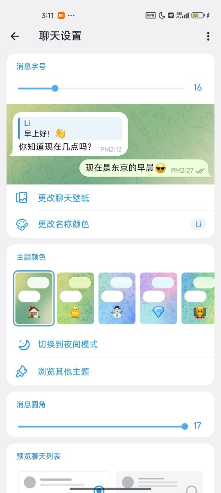
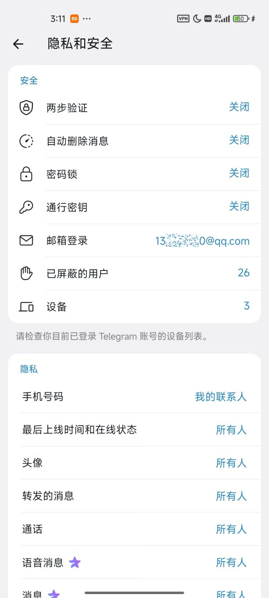

洛铃🦊Magic Caster
@LolingVerse
@EthanS03 运营商也会吞验证码，没辙


Ethan
@EthanS03
很多用 +86 手机号注册或重登 Telegram（纸飞机/电报）的朋友，应该都踩过这个坑：输完手机号，等了半天收不到验证码，反倒先弹出一个 Premium 订阅提示，让你付一周的短信费。不少人到这里就慌了，以为不交钱就登不上去。
其实完全不是这么回事。这个收费弹窗，本质上是 Telegram 发现往 +86 https://t.co/9h3nT4AkEr